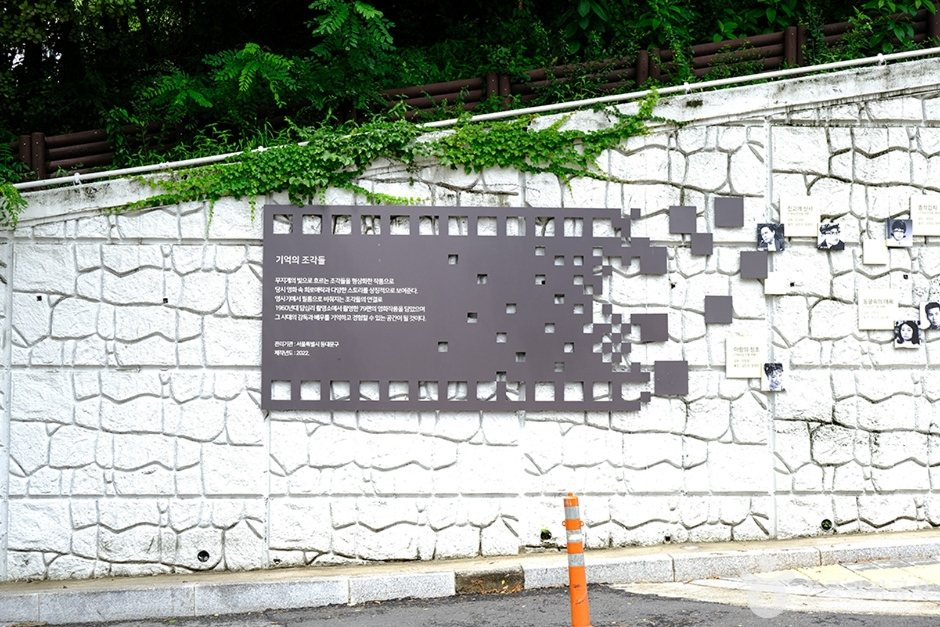
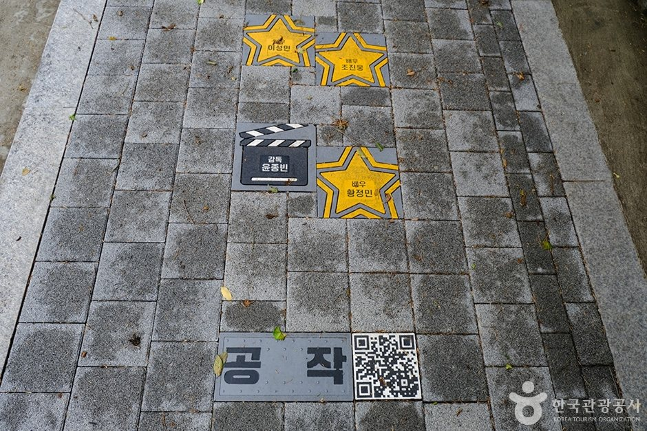
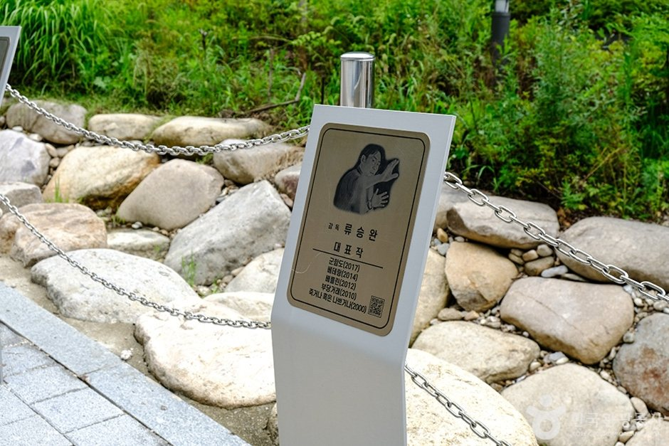
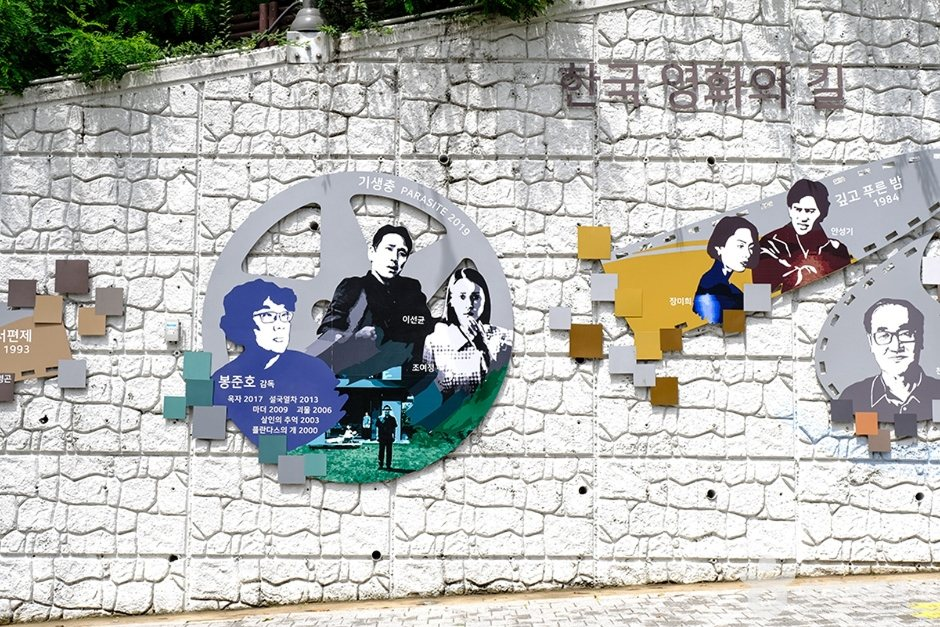

Seoul Dapsimni Film Street Guide: Overview
This Seoul Dapsimni Film Street guide covers a free, film-themed walk in Dapsimni-dong, Dongdaemun-gu. Dapsimni Film Street (답십리 영화의 거리) turns the old Chwalyeongso (film studio) hill into an outdoor gallery of Korean cinema history: murals of classic films, a recreated old theater photo zone, star-studded paving stones and actors' handprints.
It takes under an hour, costs nothing and ends at an indoor media art center with free screenings, so it's a good Seoul stop for a rainy or slow day.

A Short History: The Chwalyeongso Hill
According to Korea Tourism Organization information, about 80 films were shot around this hill between 1964 and 1969, when a film studio stood near the intersection still called Chwalyeongso Sageori (studio crossroads). Those years were the golden age of Korean cinema. Dongdaemun-gu later redesigned the area as a film-themed cultural space, so the history is now laid out along the street.

What to See on the Street
- Film murals and photo zones: Both walls show scenes from films shot here and a recreation of the old Dapsimni Theater. Each section is designed differently, so it's worth walking the whole length.
- Star paving stones: Pavers carry film titles and the names of directors, actors and crew. Look down, because they're easy to miss.
- Handprints: Handprints of leading actors from different eras are set along the route.


Dapsimni Film & Media Art Center
The street ends at the Dapsimni Film & Media Art Center, a remodeled Dongdaemun-gu culture hall. KTO information lists free film screenings, an exhibition on Korean film history and a studio experience where you can try shooting a scene. Programs and hours change, so ask the tourist info line before you go.

Visitor Information
| Item | Details |
|---|---|
| Name | Dapsimni Film Street (답십리 영화의 거리) |
| Address | 210-9 Dapsimni-ro, Dongdaemun-gu, Seoul |
| History | ~80 films shot here 1964–1969 (per KTO) |
| Hours | Street open at all times |
| Closed | Open year-round |
| Admission | Free |
| Indoor stop | Dapsimni Film & Media Art Center (free screenings, exhibition, studio experience) |
| Inquiry | Dongdaemun Tourist Information Center +82-2-2236-9135 |
| Time needed | 30–60 min (+ center visit) |
Sources: Korea Tourism Organization (한국관광공사) destination text. Photos © Korea Tourism Organization (KOGL Type 3). No AI-generated images. Hours and programs can change, so check before you go.
Getting There
- Subway: Seoul Metro Line 5 Dapsimni Station is the closest station. Search "답십리 영화의 거리" in Naver Map or Kakao Map for the walking route.
- From central Seoul: Line 5 runs directly from Gwanghwamun and Jongno 3-ga.
- Combine: Pair with Hongneung Forest or the Cheongnyangni market area on the same Dongdaemun-gu day.
Tips for Your Visit
- Walk slowly and look down for the star paving stones and handprints.
- It's a residential area, so keep noise down and step aside for other photographers.
- Go in daylight for the best mural photos, then head indoors to the media art center.
- A translation app helps, because most mural captions are in Korean.
Dapsimni Film Street vs. Other Seoul Walks
| Dapsimni Film Street | Ihwa Mural Village | Seoul Forest | |
|---|---|---|---|
| Vibe | Korean cinema history walk | Hillside murals | Big city park |
| Time | 30–60 min | 1–2 hours | 1–3 hours |
| Fee | Free | Free | Free |
| Best for | Film fans, rainy-day combo | Street-art photos | Picnics, dog walks |
Pros & Cons
✅ Pros
- Free and open all the time.
- A rare look at the golden age of Korean film.
- Ends at an indoor center with free screenings.
- Few tourists, relaxed photo stops.
⚠️ Cons
- Small and short, so it's not a full-day trip.
- Mural captions are mostly in Korean.
- Center programs and hours change.
- Residential neighborhood with no big attractions around it.
Who It Suits
- Great for: K-movie and classic-cinema fans.
- Great for: Travelers looking for a free, uncrowded neighborhood walk in Seoul.
- Great for: Rainy days, because you can finish indoors at the media art center.
- Less ideal: Visitors who only want big-ticket sights.
Plan Your Seoul Trip
Dapsimni Film Street FAQ
What is Dapsimni Film Street?
It's a film-themed walking street in Dapsimni-dong, Dongdaemun-gu, Seoul, around the old Chwalyeongso (film studio) hill. About 80 films were shot in this area between 1964 and 1969, during the golden age of Korean cinema.
Is it free?
Yes. The street is an outdoor space open all year. The Dapsimni Film & Media Art Center at the end of the street offers free film screenings and an exhibition hall (check schedules locally).
What's the address?
210-9 Dapsimni-ro, Dongdaemun-gu, Seoul (서울 동대문구 답십리로 210-9). Search '답십리 영화의 거리' in Naver Map or Kakao Map.
How long do I need?
About 30-60 minutes for the street, plus extra time if you visit the media art center.
Who can I call for information?
The Dongdaemun Tourist Information Center: +82-2-2236-9135.